مقاولات البناء
تنفيذ أعمال البناء وفق متطلبات المشروع، مع الاهتمام بتسلسل المراحل والتنسيق بين الأعمال من التأسيس وحتى اكتمال الهيكل المطلوب.
ناقش مشروعك ↗مقاول بناء وتليس وتكسير وهدم وتشطيب كامل. نساعدك تحوّل فكرتك إلى مساحة عملية وجميلة، من خلال تنظيم مراحل العمل والاهتمام بالتفاصيل من البداية للنهاية.

سواء كنت تبدأ من الصفر أو ترغب في تجديد مكان قائم، نرتّب معك احتياجات المشروع ونوضح نطاق العمل والخطوات قبل البدء.
تنفيذ أعمال البناء وفق متطلبات المشروع، مع الاهتمام بتسلسل المراحل والتنسيق بين الأعمال من التأسيس وحتى اكتمال الهيكل المطلوب.
ناقش مشروعك ↗تجهيز الجدران والأسطح للحصول على قاعدة مناسبة لمراحل الدهان والتشطيب التالية، بحسب حالة الموقع.
اطلب التفاصيل ↗أعمال إزالة وتجهيز المساحات للتجديد أو إعادة التقسيم، بعد تحديد المطلوب ومعاينة الموقع ومراعاة السلامة.
رتّب معاينة ↗تجديد أجزاء المبنى ومعالجة الملاحظات الظاهرة وتحسين حالة المكان بعد تحديد الأعمال المناسبة.
استفسر عن الترميم ↗تنسيق مراحل التشطيب حسب الاتفاق، من تجهيز الأسطح والأعمال الأساسية إلى التفاصيل النهائية.
ابدأ التخطيط ↗لديك عمل محدد أو أكثر من خدمة؟ اشرح لنا المطلوب وسنساعدك في تحديد نطاق العمل والخطوة المناسبة.
تواصل مباشرة ↗
 BUILD · RESTORE · FINISH
BUILD · RESTORE · FINISH
في ركن الإعمار، نؤمن أن نجاح أي مشروع يبدأ بتحديد المطلوب بوضوح، ثم تنظيم الأعمال ومتابعة التفاصيل مرحلة بعد مرحلة. نناقش احتياجك قبل البدء، ونوضح نطاق التنفيذ بما يتناسب مع طبيعة المكان.
نقدم خدمات البناء والتليس والتكسير والهدم والترميم والتشطيب الكامل، ونساعدك على ترتيب الأولويات لتكون الصورة أوضح قبل اتخاذ القرار.
نحرص على أن تعرف ما الذي سيحدث بعد تواصلك معنا، من فهم احتياجك إلى الاتفاق على نطاق الأعمال وتنسيق التنفيذ.
اشرح نوع العمل الذي تحتاجه، سواء بناء أو تكسير أو ترميم أو تشطيب.
نناقش حالة الموقع والمساحة والأعمال المطلوبة ونرتب المعاينة عند الحاجة.
تحديد نطاق العمل والتفاصيل والتكلفة والمدة المتوقعة بحسب المشروع.
بعد الاتفاق، يتم تنسيق مراحل العمل حتى اكتمال النطاق المتفق عليه.
استعرض نماذج بصرية لأعمال البناء والتجهيز والتشطيب. يُفضّل استبدال الصور التجريبية بصور مشاريعكم الفعلية لإظهار أعمالكم بوضوح.


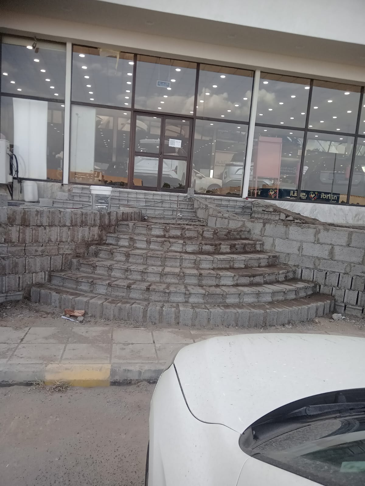
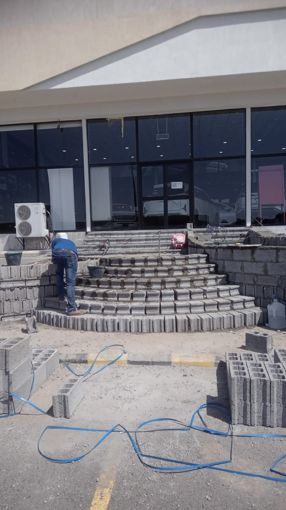
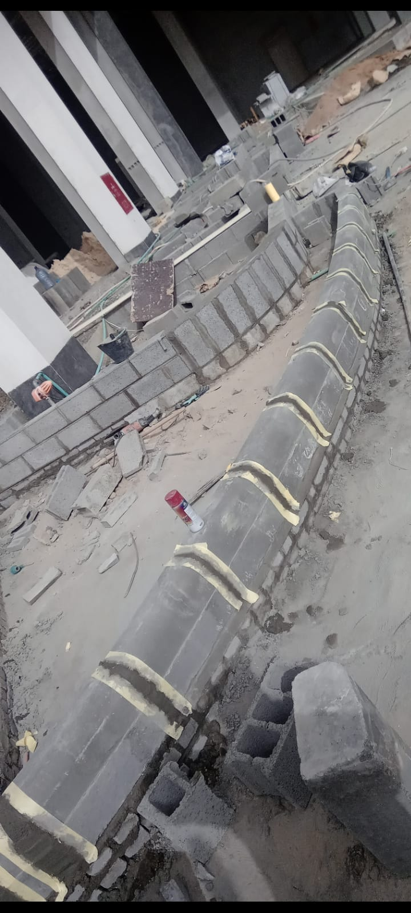
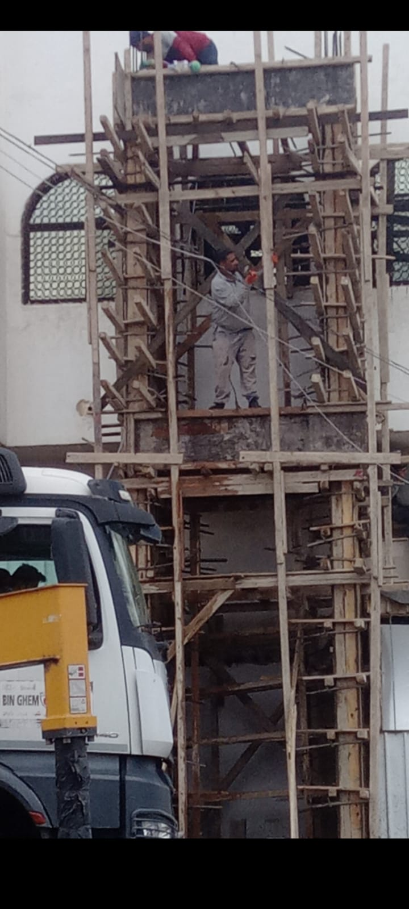
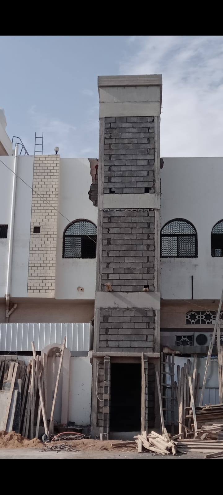
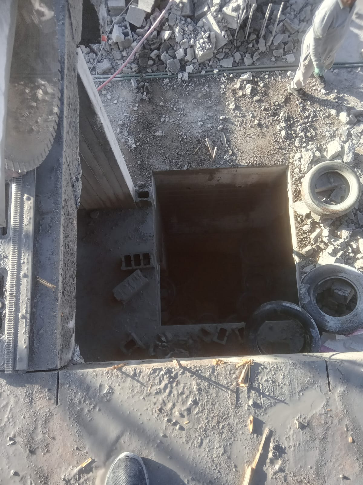
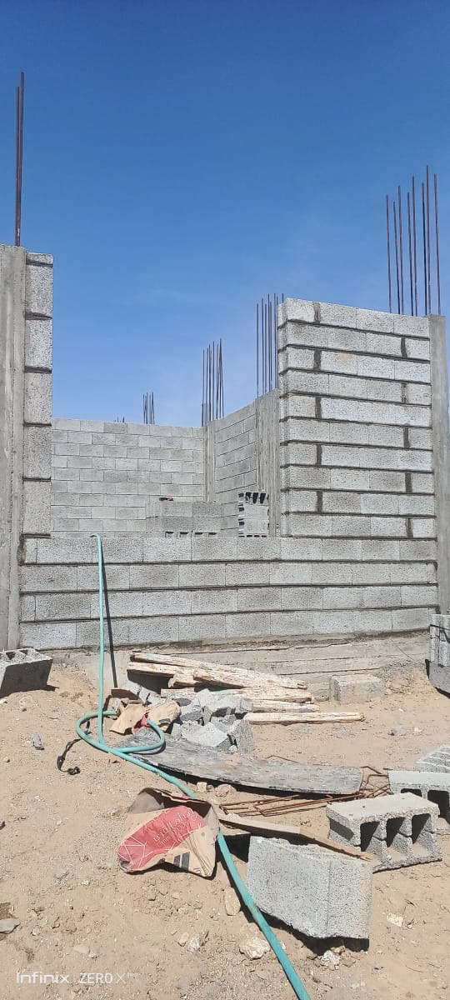
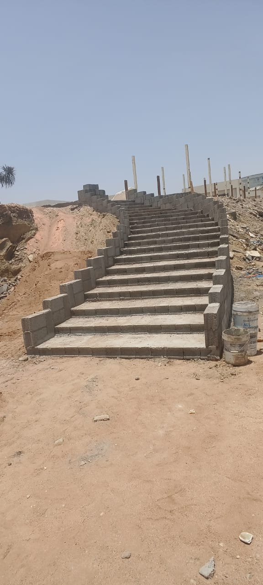
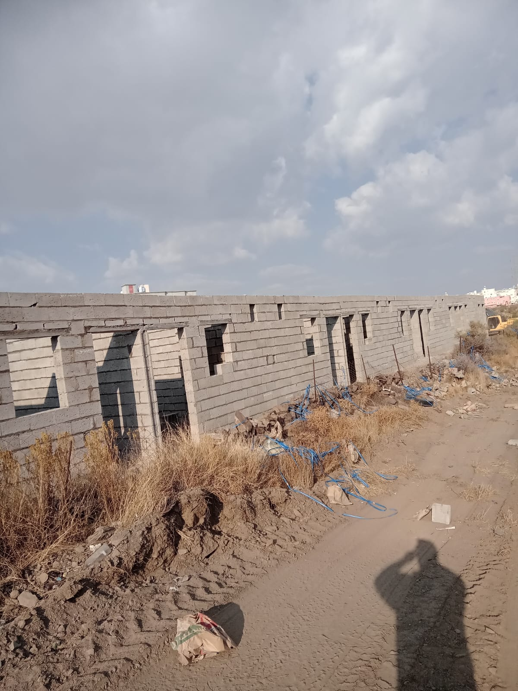
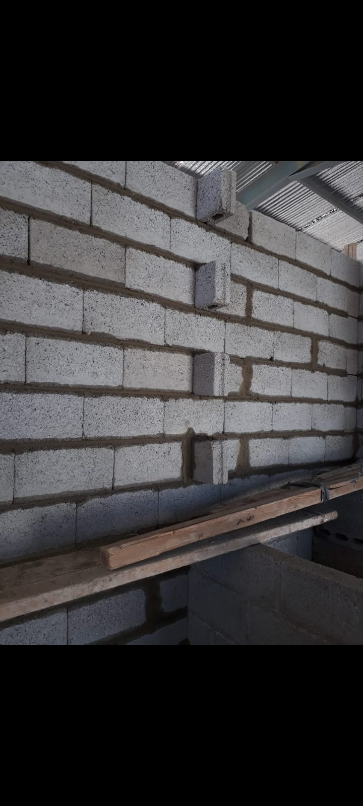
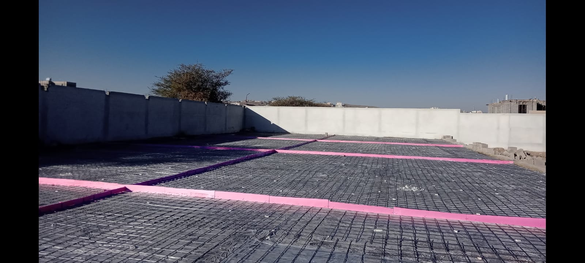
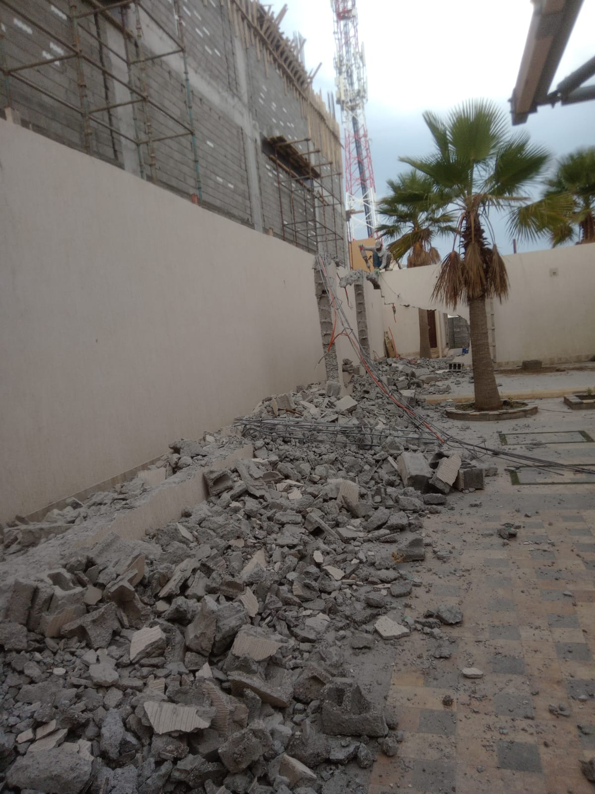
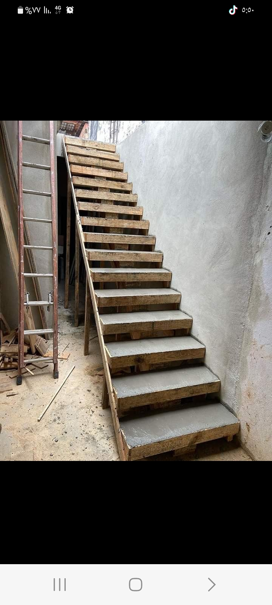
ⓘ الصور الحالية للتصميم التجريبي وليست إثباتًا لأعمال منفذة. يمكن استبدالها بصور العميل.
مشاريع البناء والتجديد تحتاج إلى تنسيق جيد وقرارات واضحة. نساعدك على ترتيب احتياجاتك ومعرفة الخطوات الأساسية قبل بدء الأعمال.
لو عندك استفسار عن نوع العمل أو طريقة التواصل، اتصل بنا لمناقشة التفاصيل.
0562485434 ↗مقاولات البناء والتليس والتكسير والهدم والترميم والتشطيب الكامل وفق نطاق العمل المتفق عليه.
نعم، اشرح الأعمال التي تحتاجها وسنناقش إمكانية تنسيقها ضمن خطة عمل واحدة حسب طبيعة الموقع.
تختلف التكلفة بحسب المساحة ونوع الأعمال والمواد المطلوبة وحالة المكان. تواصل معنا لتوضيح التفاصيل.
يمكنك تجهيز صور واضحة للمكان والأجزاء المطلوب العمل عليها لتسهيل شرح احتياجك، وقد نحتاج إلى معاينة الموقع.
اتصل على 0562485434 ووضح نوع الخدمة والموقع والوقت المناسب للتواصل.
سواء كان المطلوب بناءً جديدًا أو تكسيرًا أو ترميمًا أو تشطيبًا كاملًا، تواصل معنا واشرح التفاصيل الأساسية لنساعدك في تحديد الخطوة التالية.
☎اتصل مباشرة0562485434↗كل ما نحتاجه في البداية هو معرفة نوع العمل والموقع والاحتياج الأساسي.
راسلنا عبر واتساب ↗يتم تأكيد تفاصيل الخدمة والتكلفة والموعد بالتواصل المباشر.